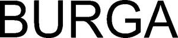

Trade Mark Journal No.2025/021 23 May 2025
WO0000001843590 (9,14,16,18,21,35)
Office of origin: Lithuania
Date of International Registration:13 December 2024
Date of designation in the UK:
3 April 2025

International priority date claimed: 13 November 2024
(Lithuania)
- Class 9
- 3D spectacles; 3D scanners; acid hydrometers; aerometers; accelerometers; spectacles; anti-glare glasses; spectacle chains; spectacle lenses; spectacle cords; spectacle frames; spectacle cases; actinometers; acidimeters for batteries; battery boxes; plates for batteries; acoustic conduits; acoustic couplers; alarms; alidades; alcoholmeters; breathalyzers; ammeters; animated cartoons; anodes; anode batteries; aerials; anticathodes; apertometers [optics]; clothing especially made for laboratories; asbestos clothing for protection against fire; shoes for protection against accidents, irradiation and fire; safety tarpaulins; teeth protectors; protective face shields for workers; clothing for protection against accidents, irradiation and fire; clothing for protection against fire; headgear being protective helmets; protective suits for aviators; motorcyclists' clothing for protection against accident or injury; goggles for sports; protective helmets for sports; safety nets; anti-interference devices [electricity]; voltage surge protectors; safety helmets; asbestos gloves for protection against accidents; insulating gloves for protection against accidents; protective masks, not for medical purposes; airbags for safety purposes for fall protection; gloves for protection against accidents; protection devices against X-rays, not for medical purposes; circular slide rules; lighting ballasts; close-up lenses; asbestos screens for firefighters; personal stereos; protection devices for personal use against accidents; selfie sticks [hand-held monopods]; lenses for astrophotography; apparatus and instruments for astronomy; USB flash drives; distance measuring apparatus; distance recording apparatus; branch boxes [electricity]; hemline markers; audiovisual teaching apparatus; step-up transformers; high-frequency apparatus; high tension batteries; altimeters; height measuring instruments; ear pads for headphones; ear phones; steering apparatus, automatic, for vehicles; time switches, automatic; in-car telephone handset cradles; scanners [apparatus] for performing automotive diagnostics; electric wire harnesses for automobiles; crash test dummies; parking meters; autonomous navigation systems for ships; azimuth instruments; incubators for bacteria culture; balancing apparatus; voting machines; testing apparatus not for medical purposes; wavemeters; barometers; battery jars; battery chargers; wireless speaker microphones; wireless portable printers for use with laptops and mobile devices; cordless telephones; coaxial cables; gasoline gauges; betatrons; ticket printers; biochips; biometric passports; biometric locks; biometric identity cards; electronic access control systems for interlocking doors; flashlights [photography]; flashing lights [luminous signals]; flash-bulbs [photography]; flash lamps for smartphones; plotters; bar code readers; processors [central processing units]; chemistry apparatus and instruments; chromatography apparatus for laboratory use; chronographs [time recording apparatus]; cyclotrons; carpenters' rules; spectacles for correcting colour vision deficiency; probes for scientific purposes; frequency meters; frequency extenders; oxygen transvasing apparatus; decompression chambers; personal digital assistants (PDAs); covers for personal digital assistants [PDAs]; densitometers, not for medical purposes; detectors; diaphragms [acoustics]; diaphragms [photography]; diaphragms for scientific apparatus; diagnostic apparatus for research laboratory use; diagnostic apparatus, not for medical purposes; magnifying glasses [optics]; enlarging apparatus [photography]; diffraction apparatus [microscopy]; dictating machines; dynamometers; satellites for scientific purposes; humanoid robots with artificial intelligence for use in scientific research; humanoid robots with artificial intelligence for preparing beverages; disk drives for computers; juke boxes for computers; stills for laboratory experiments; distillation apparatus for scientific purposes; dNA chips; dosage dispensers, not for medical use [measuring apparatus]; dosimeters; choking coils [impedance]; salinometers; gasometers [measuring instruments]; gas testing instruments; apparatus for generating gas for calibration purposes; dust measuring apparatus; data processing apparatus; data gloves; intercommunication apparatus; peepholes [magnifying lenses] for doors; dVD players; reflective articles for wear, for the prevention of accidents; wearable activity trackers; wearable speakers; wearable computers; wearable video display monitors; smoke detectors; drainers for use in photography; drying racks [photography]; effects pedals for guitars; screens [photography]; screens for photoengraving; exposure meters [light meters]; films, exposed; x-ray films, exposed; electrified rails for mounting spot lights; electrical adapters; light dimmers [regulators], electric; electric door bells; electric and electronic effects units for musical instruments; converters, electric; electric apparatus for commutation; contacts, electric; conductors, electric; measuring devices, electric; igniting apparatus, electric, for igniting at a distance; alarm bells, electric; regulating apparatus, electric; resistances, electric; couplings, electric; theft prevention installations, electric; electric loss indicators; charging stations for electric vehicles; batteries, electric; batteries, electric, for vehicles; relays, electric; coils, electric; locks, electric; electrified fences; electro-dynamic apparatus for the remote control of railway points; electro-dynamic apparatus for the remote control of signals; solenoid valves [electromagnetic switches]; electromagnetic coils; ticket dispensing terminals, electronic; electronic collars to train animals; electronic pocket translators; electronic sheet music, downloadable; electronic passports; electronic key fobs being remote control apparatus; electronic pens [visual display units]; electronic controllers for servo motors; electronic numeric displays; batteries for electronic cigarettes; chargers for electronic cigarettes; transmitters of electronic signals; electronic interactive whiteboards; vacuum tubes [radio]; padlocks, electronic; electronic tags for goods; electronic notice boards; electronic agendas; accumulators, electric; accumulators, electric, for vehicles; grids for batteries; chargers for electric batteries; circuit closers; circuit breakers; electricity conduits; discharge tubes, electric, other than for lighting; switches, electric; cables, electric; sheaths for electric cables; junction sleeves for electric cables; electric plugs; collectors, electric; wires, electric; identification sheaths for electric wires; identification threads for electric wires; materials for electricity mains [wires, cables]; connections for electric lines; electric sockets; electric actuators; holders for electric coils; covers for electric outlets; particle accelerators; epidiascopes; ergometers; evacuation chairs; facsimile machines; tripods for cameras; apparatus and instruments for physics; fluorescent screens; cameras [photography]; stands for photographic apparatus; photovoltaic cells; darkrooms [photography]; darkroom lamps [photography]; filters for use in photography; viewfinders, photographic; photometers; glazing apparatus for photographic prints; drying apparatus for photographic prints; centering apparatus for photographic transparencies; phototelegraphy apparatus; apparatus to check franking; fire pumps; fire blankets; fire hose nozzles; fire escapes; fire engines; fire boats; fire hose; fire alarms; fire beaters; resuscitation mannequins [teaching apparatus]; galena crystals [detectors]; rearview cameras for vehicles; galvanic cells; galvanic batteries; galvanometers; head cleaning tapes [recording]; electric installations for the remote control of industrial operations; boiler control instruments; loudspeakers; horns for loudspeakers; cabinets for loudspeakers; speaking tubes; sound reproduction apparatus; wah-wah pedals; audio- and video-receivers; sound locating instruments; audio mixers; sound transmitting apparatus; audio interfaces; acoustic alarms; audio recordings; sound recording apparatus; sound recording strips; sound recording carriers; phonograph records; cleaning apparatus for phonograph records; life saving apparatus and equipment; life belts; life-saving capsules for natural disasters; life jackets; life-saving rafts; life buoys; life nets; lifeboats; railway traffic safety appliances; surveying apparatus and instruments; surveying instruments; needles for surveying compasses; fire extinguishers; contact lenses; containers for contact lenses; contact lens cases incorporating ultrasonic cleaning functions; Global Positioning System [GPS] apparatus; terminals [electricity]; gradient indicators; graduated glassware; speed indicators; speed measuring apparatus [photography]; record players; needles for record players; levels [instruments for determining the horizontal]; sounding apparatus and machines; sounding lines; sounding leads; mercury levels; haptic suits, other than for medical purposes; heliographic apparatus; sonars; hydrometers; hygrometers; holographic projection apparatus; holograms; humanoid robots having communication and learning functions for assisting and entertaining people; inductors [electricity]; infrared detectors; armatures [electricity]; inclinometers; integrated circuit cards [smart cards]; integrated circuits; interactive touchscreen terminals; inverters [electricity]; copper wire, insulated; appliances for measuring the thickness of leather; survival blankets; smartglasses; smart speakers; smartwatches; smartphones; smart rings; connected bracelets [measuring instruments]; home automation hubs; covers for smartphones; cases for smartphones; cases for smartphones incorporating a keyboard; protective films adapted for smartphones; gimbals for smartphones; ionization apparatus not for the treatment of air or water; motion tracking mounts for cameras; switchboxes [electricity]; connectors [electricity]; black boxes [data recorders]; tape recorders; telecommunication apparatus in the form of jewellery; marine depth finders; marine compasses; naval signalling apparatus; calipers; calibrating rings; calorimeters; squares for measuring; ducts [electricity]; cassette players; cash registers; cathodes; cathodic anti-corrosion apparatus; dust masks incorporating air purification; knee-pads for workers; egg-candlers; spark-guards; quantity indicators; portable document scanners; apparatus for editing cinematographic film; cinematographic film, exposed; cinematographic cameras; pocket calculators; climate control digital thermostats; clinometers; encoded key cards; encoded identification bracelets, magnetic; encoded magnetic cards; head-up display apparatus for vehicles; compact discs [audio-video]; compact discs [read-only memory]; compact disc players; comparators; compasses for measuring; computers; computer hardware; computer memory devices; computer screen saver software, recorded or downloadable; protective films adapted for computer screens; computer peripheral devices; computer keyboards; computer software platforms, recorded or downloadable; printers for use with computers; computer network routers; joysticks for use with computers, other than for video games; couplers [data processing equipment]; switchboards; commutators; condensers [capacitors]; control panels [electricity]; photocopiers; correcting lenses [optics]; cosmographic instruments; credit card terminals; cryptocurrency hardware wallets; directional compasses; quantum computers; quantum dot light-emitting diodes [QLED]; breathing apparatus, not for medical purposes; filters for respiratory masks, not for medical purposes; respiratory masks, not for medical purposes; snorkels; baby scales; traffic cones; bioreactors for laboratory use; electrolysis apparatus for laboratory use; fermentation apparatus for laboratory use; capillary tubes for laboratory use; laboratory trays; laboratory robots; laboratory burettes; laboratory centrifuges; furnaces for laboratory use; laboratory pipettes; logs [measuring instruments]; wire connectors [electricity]; time clocks [time recording devices]; time recording apparatus; hands-free kits for telephones; letter scales; lactodensimeters; lactometers; electric discharge tubes, other than for lighting; floppy disks; lasers, not for medical purposes; rescue laser signalling flares; electric linear actuators; square rulers for measuring; rulers [measuring instruments]; solderers' helmets; chips [integrated circuits]; fuses; fuse wire; bioreactors for cell culturing for scientific research; magnets; disks, magnetic; magnetic encoders; magnetic resonance imaging [MRI] apparatus, not for medical purposes; demagnetizing apparatus for magnetic tapes; magnetic tape units for computers; magnetic data media; identity cards, magnetic; magnetic tapes; magnetic wires; hairdressing training heads [teaching apparatus]; measures; measuring apparatus; droppers for measuring, other than for medical or household purposes; measuring instruments; measuring spoons; mathematical instruments; surveying chains; surveyors' levels; protractors [measuring instruments]; gauges; rods (surveying instruments); thin client computers; mechanical signs; material testing instruments and machines; megaphones; plane tables [surveying instruments]; metal detectors for industrial or military purposes; meteorological balloons; meteorological instruments; rules [measuring instruments]; metronomes; microphones; micrometers; micrometer gauges; microprocessors; microscopes; containers for microscope slides; microtomes; mobile telephones; holders adapted for mobile telephones and smartphones; cell phone straps; mobile phone screen protectors; lanyards for cell phones; mobile phone chargers; modems; resuscitation training simulators; teaching apparatus; teaching robots; point-of-sale [POS] terminals; juke boxes, musical; coin-operated mechanisms for television sets; coin-operated mechanisms; monitors [computer programs]; monitors [computer hardware]; apparatus for testing breast milk, other than for medical or veterinary use; musical instrument digital interface controllers being audio interfaces; test tubes; sunglasses for pets; nanoparticle size analysers; ear plugs for divers; nose clips for divers and swimmers; divers' masks; diving suits; gloves for divers; weight belts for divers; nautical apparatus and instruments; navigational instruments; satellite navigational apparatus; rescue flares, non-explosive and non-pyrotechnic; carriers for dark plates [photography]; neon signs; bullet-proof clothing; bullet-proof waistcoats; neural helmets, not for medical purposes; toner cartridges, unfilled, for printers and photocopiers; ink cartridges, unfilled, for printers and photocopiers; hand-held electronic dictionaries; portable speakers; portable media players; walkie-talkies; portable ultrafine dust meters; portable power chargers; levelling staffs [surveying instruments]; levelling instruments; verniers; slope indicators; telerupters; earpieces for remote communication; remote control apparatus; objectives [lenses] [optics]; selfie lenses; lens hoods; octants; eyepieces; ohmmeters; eyewear; optical apparatus and instruments; optical discs; optical condensers; optical lenses; optical fibres [light conducting filaments]; optical character readers; optical lanterns; optical glass; micrometer screws for optical instruments; optical data media; optical lamps; organic light-emitting diodes [OLED]; air analysis apparatus; respirators for filtering air, not for medical purposes; oscillographs; ozonizers for calibration purposes; ozone generators for calibration purposes; counterfeit coin detectors; satellite finder meters; electronic publications, downloadable; downloadable graphics for mobile phones; downloadable emoticons for mobile phones; downloadable cryptographic keys for receiving and spending crypto assets; downloadable ring tones for mobile phones; downloadable digital music files authenticated by non-fungible tokens [NFTs]; downloadable digital image files authenticated by non-fungible tokens [NFTs]; downloadable virtual clothing; computer game software, downloadable; computer software applications, downloadable; downloadable computer software for managing crypto asset transactions using blockchain technology; downloadable computer software applications for minting non-fungible tokens [NFTs]; software as a medical device [SaMD], downloadable; downloadable application software for virtual environments; downloadable e-wallets; computer programs, downloadable; downloadable music files; downloadable image files; food analysis apparatus; apparatus to check stamping mail; mouse [computer peripheral]; mouse pads; pince-nez; punched card machines for offices; periscopes; petri dishes; automated teller machines [ATM]; money counting and sorting machines; pyrometers; gloves for protection against X-rays for industrial purposes; finger sizers; pitot tubes; piezoelectric sensors; planimeters; tablet computers; covers for tablet computers; dive skins; washing trays [photography]; fibre optic cables; thin film speakers; film cutting apparatus; polarimeters; breathing apparatus for underwater swimming; radio pagers; security tokens [encryption devices]; baby monitors; dashboard mats adapted for holding mobile telephones and smartphones; sprinkler systems for fire protection; body harnesses for support when lifting loads; prisms [optics]; projection apparatus; projection screens; slide projectors; magic lanterns; decorative magnets; semi-conductors; wafers for integrated circuits; radar apparatus; masts for wireless aerials; radios; headphones; transmitting sets [telecommunication]; radiological apparatus for industrial purposes; radiology screens for industrial purposes; radiotelephony sets; radiotelegraphy sets; riding helmets; missile warning systems; wheel alignment meters; refractometers; refractors; t-squares for measuring; x-ray apparatus not for medical purposes; apparatus and installations for the production of X-rays, not for medical purposes; x-ray tubes not for medical purposes; x-ray photographs, other than for medical purposes; rheostats; retorts; retorts' stands; limiters [electricity]; wrist rests for use with computers; spools [photography]; trackballs [computer peripherals]; fog signals, non-explosive; saccharometers; safety restraints, other than for vehicle seats and sports equipment; nets for protection against accidents; security surveillance robots; sunglasses; solar batteries; solar panels for the production of electricity; self-checkout terminals; stage lighting regulators; sextants; amplifiers for servo motors; controllers for servo motors; spherometers; animal signalling rattles for directing livestock; signalling buoys; signal bells; signalling whistles; signal lanterns; anti-theft warning apparatus; sirens; dressmakers' measures; thread counters; transmitters [telecommunication]; transponders; frames for photographic transparencies; transparencies [photography]; counters; digital signs; gimbals for digital cameras; electronic book readers; digital photo frames; digital weather stations; abacuses; readers [data processing equipment]; slide-rules; calculators; bells [warning devices]; push buttons for bells; scanners for data processing; distribution consoles [electricity]; junction boxes [electricity]; distribution boards [electricity]; distribution boxes [electricity]; laptop computers; cooling pads for laptop computers; bags adapted for laptops; sleeves for laptops; slide calipers; pressure indicators; pressure measuring apparatus; pressure gauges; pressure indicator plugs for valves; hourglasses; egg timers (sandglasses); printed circuits; printed circuit boards; cases especially made for photographic apparatus and instruments; furniture especially made for laboratories; spectrograph apparatus; spectroscopes; spirit levels; sports whistles; mouth guards for sports; head guards for sports; flowmeters; screw-tapping gauges; current rectifiers; monitoring apparatus, other than for medical purposes; observation instruments; stereoscopes; stereoscopic apparatus; measuring glassware; amplifying valves; amplifying tubes; amplifiers; stands adapted for laptops; stroboscopes; foldable smartphones; sulfitometers; adding machines; plumb lines; plumb bobs; scales; balances (steelyards); scales with body mass analysers; weights; steelyards (lever scales); weighing apparatus and instruments; weighing machines; interfaces for computers; invoicing machines; revolution counters; tachometers; taximeters; densimeters; telepresence robots; answering machines; telephone apparatus; telephone wires; telephone transmitters; telephone receivers; telegraphs [apparatus]; telegraph wires; telemeters; telescopes; telescopic sights for artillery; sighting telescopes for firearms; teleprinters; television apparatus; teleprompters; temperature indicators; temperature indicator labels, not for medical purposes; theodolites; thermal imaging cameras; thermionic valves; thermo-hygrometers; dry suits; thermometers, not for medical purposes; thermostats; thermostats for vehicles; crucibles [laboratory]; cupels (laboratory); precision measuring apparatus; precision balances; weighbridges; range finders; totalizators; transformers [electricity]; vehicle breakdown warning triangles; speed checking apparatus for vehicles; mileage recorders for vehicles; navigation apparatus for vehicles [on-board computers]; automatic indicators of low pressure in vehicle tyres; vehicle radios; parking sensors for vehicles; simulators for the steering and control of vehicles; transistors [electronic]; triodes; fire extinguishing apparatus; fire-extinguishing balls; ultrasonic imaging apparatus, not for medical purposes; filters for ultraviolet rays, for photography; urinometers; ignition batteries; shutters [photography]; shutter releases [photography]; notebook computers; videotapes; video screens; video recorders; video mixing desks; video projectors; memory cards for video game machines; headsets for playing video games; video game cartridges; vacuum gauges; wet suits; water level indicators; rods for water diviners; starter cables for motors; variometers; user-programmable humanoid robots, not configured; mirrors for inspecting work; mirrors [optics]; camcorders; video cassettes; video baby monitors; video telephones; internal cooling fans for computers; equalizers [audio apparatus]; devices for the projection of virtual keyboards; virtual reality headsets; virtual reality controllers; viscosimeters; voltmeters; bathroom scales; anemometers; wind socks for indicating wind direction; sounding rockets; buzzers; computer game software, recorded; computer software, recorded; data sets, recorded or downloadable; computer programs, recorded; computer operating programs, recorded; tone arms for record players; apparatus for changing record player needles; speed regulators for record players; whistle alarms; cell switches [electricity]; voltage regulators for vehicles; jigs [measuring instruments]; head-mounted displays; visors for helmets; heat regulating apparatus; dog whistles; traffic-light apparatus [signalling devices]; blueprint apparatus; light-emitting diodes [LED]; reflective safety vests; beacons, luminous; light-emitting electronic pointers; road signs, luminous or mechanical; signalling panels, luminous or mechanical; signals, luminous or mechanical; safety signals [luminous]; warning signs [luminous]; signs, luminous; lightning conductors; apparatus for measuring the thickness of skins; reducers (electricity); subwoofers; mechanisms for counter-operated apparatus; mobile phone ring holders; mobile phone ring stands; selfie ring lights for smartphones; ring sizers; pedometers; binoculars; marking gauges [joinery]; marking buoys.
- Class 14
- Agates; amulets [jewellery]; anchors [clock- and watchmaking]; bracelets [jewellery]; atomic clocks; gold, unwrought or beaten; gold thread [jewellery]; earrings; shoe jewellery; busts of precious metal; precious stones; precious metals, unwrought or semi-wrought; crucifixes of precious metal, other than jewellery; sew-on tags of precious metal for clothing; prize cups of precious metal; split rings of precious metal for keys; threads of precious metal [jewellery]; commemorative statuary cups made of precious metal; figurines of precious metal; wire of precious metal [jewellery]; badges of precious metal; chronographs [watches]; chronometers; chronometric instruments; chronoscopes; dials [clock- and watchmaking]; diamonds; ornamental pins; ivory jewellery; boxes of precious metal; clocks and watches, electric; jet, unwrought or semi-wrought; ornaments of jet; jewellery of yellow amber; chains [jewellery]; iridium; retractable key rings; retractable key chains; jewellery; jewellery for pets; jewellery charms; presentation boxes for jewellery; jewellery boxes; jewellery findings; jewellery rolls; clasps for jewellery; cabochons; tie clips; tie pins; necklaces [jewellery]; pearls made of ambroid [pressed amber]; beads for making jewellery; cloisonné jewellery; control clocks [master clocks]; crucifixes as jewellery; clockworks; watches; clocks; watch bands; barrels [clock- and watchmaking]; presentation boxes for watches; watch cases [parts of watches]; clock cases; watch chains; movements for clocks and watches; clock hands; watch springs; watch glasses; ingots of precious metals; alloys of precious metal; medals; lockets [jewellery]; works of art of precious metal; coins; olivine [gems]; osmium; palladium; peridot; pearls [jewellery]; platinum [metal]; semi-precious stones; lanyards for keys; charms for key chains; key chains (split rings with trinket or decorative fob); key rings (split rings with trinket or decorative fob); charms for key rings; wristwatches; wristwatch straps; watch hands; cuff links; rhodium; rosaries; misbaha [prayer beads]; ruthenium; brooches [jewellery]; sundials; silver, unwrought or beaten; silver thread [jewellery]; spun silver [silver wire]; bracelets made of embroidered textile [jewellery]; hat jewellery; jewellery hat pins; pins [jewellery]; stopwatches; statues of precious metal; paste jewellery; copper tokens; spinel [precious stones]; pendulums [clock- and watchmaking]; alarm clocks; rings [jewellery].
- Class 16
- Addressing machines; address plates for addressing machines; address stamps; posters; aquarelles; albums; almanacs; charcoal pencils; animation cels; fingerstalls for office use; sealing stamps; seals [stamps]; franking machines for office use; sealing machines for offices; sealing wafers; cases for stamps [seals]; holders for stamps [seals]; stamp pads; stamp stands; folders [stationery]; protective covers for books; architects' models; arithmetical tables; atlases; prints [engravings]; transfers [decalcomanias]; tracing cloth; gums [adhesives] for stationery or household purposes; nibs of gold; pencil lead holders; fountain pens; banknotes; tickets; biological samples for use in microscopy [teaching materials]; blotters; forms, printed; glitter for stationery purposes; pads [stationery]; drawing pens; drawing sets; drawing pins; squares for drawing; french curves; drawing boards; drawing rulers; t-squares for drawing; drawing instruments; drawing materials; brochures; blueprints; barcode ribbons; booklets; sheets of reclaimed cellulose for wrapping; chromolithographs [chromos]; cigar bands; artists' watercolour saucers; song books; desktop cabinets for stationery [office requisites]; duplicators; inking sheets for duplicators; inking ribbons; inking sheets for document reproducing machines; house painters' rollers; paint trays; paintbrushes; decalcomanias; diagrams; document holders [stationery]; document laminators for office use; document files [stationery]; humidity control sheets of paper or plastic for foodstuff packaging; pencil sharpeners, electric or non-electric; pencil sharpening machines, electric or non-electric; typewriters, electric or non-electric; electrocardiograph paper; shields [paper seals]; stencil plates; hand labelling appliances; filter paper; moulds for modelling clays [artists' materials]; photo-engravings; photographs [printed]; apparatus for mounting photographs; electrotypes; terrestrial globes; gluten [glue] for stationery or household purposes; graphic representations; graphic prints; graphic reproductions; scrapers [erasers] for offices; slate pencils; writing slates; floor decals; elastic bands for offices; gummed cloth for stationery purposes; gummed tape [stationery]; flower-pot covers of paper; hectographs; toilet paper; histological sections for teaching purposes; newsletters; chart pointers, non-electronic; announcement cards [stationery]; washi; charts; seaweed-based film for wrapping; calendars; carbon paper; tracing patterns; cardboard; cardboard tubes; files [office requisites]; catalogues; tags for index cards; baking paper; square rulers for drawing; sealing wax; blackboards; adhesives for stationery or household purposes; printing blocks; books; bookmarkers; bookends; bookbinding material; cloth for bookbinding; fabrics for bookbinding; cords for bookbinding; bookbinding apparatus and machines [office equipment]; trading cards, other than for games; comic books; flip charts; tracing needles for drawing purposes; spools for inking ribbons; copying paper [stationery]; index cards [stationery]; cards; starch paste [adhesive] for stationery or household purposes; credit card imprinters, non-electric; chalk for lithography; chalk holders; manifolds [stationery]; conical paper bags; newspapers; letter trays; stickers [stationery]; self-adhesive tapes for stationery or household purposes; adhesive tapes for stationery or household purposes; adhesives (glues) for stationery or household purposes; plastic cling film, extensible, for palletization; moisteners for gummed surfaces [office requisites]; adhesive tape dispensers [office requisites]; lithographs; lithographic stones; lithographic works of art; magnetic boards being office requisites; stencils for decorating food and beverages; graining combs; wood pulp board [stationery]; wood pulp paper; mezuzah cases; mezuzah parchments; mimeograph apparatus and machines; modelling materials; modelling clay; modelling paste; modelling wax, not for dental purposes; school supplies [stationery]; paint boxes for use in schools; teaching materials [except apparatus]; painters' easels; musical greeting cards; printing sets, portable [office requisites]; numbering apparatus; etchings; oleographs; origami folding paper; packaging material made of starches; packing paper; palettes for painters; pantographs [drawing instruments]; papier mâché; figurines of papier mâché; statuettes of papier mâché; pastels [crayons]; glue for stationery or household purposes; sealing compounds for stationery purposes; passport holders; pictures; paintings [pictures], framed or unframed; postcards; postage stamps; pen cases; parchment paper; periodicals; drawing pads; pencils; pencil holders; pencil leads; trays for sorting and counting money; money holders; plans; plastics for modelling; garbage bags of paper or of plastics; plastic bags for pet waste disposal; plastic bubble film for wrapping; plastic blister packs for packaging; plastic film for wrapping; steel letters; steel pens; obliterating stamps; hat boxes of cardboard; penholders; stands for pens and pencils; pen clips; pens [office requisites]; polymer modelling clay; paper folders; padding materials of paper or cardboard; packing [cushioning, stuffing] materials of paper or cardboard; paper sheets [stationery]; paper creasers [office requisites]; paper knives [letter openers]; paper cutters [office requisites]; paper clasps; folders for papers; paper shredders for office use; paper-clips; mats of paper for beer glasses; placards of paper or cardboard; bags [envelopes, pouches] of paper or plastics, for packaging; carrier bags of paper or plastic; coasters of paper; paper bows, other than haberdashery or hair decorations; paper coffee filters; paper bags for use in the sterilization of medical instruments; dental tray covers of paper; tablemats of paper; towels of paper; bibs of paper; bibs, sleeved, of paper; table linen of paper; table runners of paper; drawer liners of paper, perfumed or not; bottle wrappers of paper or cardboard; cream containers of paper; tracing paper; bottle envelopes of paper or cardboard; boxes of paper or cardboard; labels of paper or cardboard; signboards of paper or cardboard; baggage claim check tags of paper; filtering materials of paper; bunting of paper; paper ribbons, other than haberdashery or hair decorations; handkerchiefs of paper; banners of paper; table napkins of paper; tissues of paper for removing make-up; face towels of paper; tablecloths of paper; paper wipes for cleaning; flags of paper; paper; paper for medical examination tables; plantable seed paper [stationery]; portraits; paperweights; prospectuses; spray chalk; page holders; paper for radiograms; engravings; etching needles; engraving plates; wristbands for the retention of writing instruments; hand-rests for painters; ink; inkwells; inking pads; ink stones [ink reservoirs]; ink sticks; writing instruments; pens [writing implements] incorporating tips for operating touchscreen devices; inkstands; writing cases [sets]; writing paper; writing materials; writing chalk; clipboards; nibs; writing board erasers; typewriter ribbons; typewriter keys; rollers for typewriters; pen wipers; desk mats; stationery; office requisites, except furniture; office perforators; writing or drawing books; writing cases [stationery]; writing brushes; handwriting specimens for copying; ledgers [books]; printers' reglets; galley racks [printing]; composing frames [printing]; indexes; rice paper; stapling presses [office requisites]; clips for offices; paper for recording machines; ring binders; sewing patterns; embroidery designs [patterns]; tailors' chalk; calculating tables; numbers [type]; advertisement boards of paper or cardboard; flyers; compasses for drawing; punches [office requisites]; pins [stationery]; colouring books; colouring pictures; stamps [seals]; printed matter; printers' blankets, not of textile; geographical maps; printed coupons; printed publications; printed sheet music; printed timetables; steatite [tailor's chalk]; absorbent sheets of paper or plastic for foodstuff packaging; souvenir banknotes; greeting cards; staples for offices; correcting ink [heliography]; correcting fluids [office requisites]; correcting tapes [office requisites]; canvas for painting; papers for painting and calligraphy; painters' brushes; stencils; stencils [stationery]; stencil cases; transparencies [stationery]; erasers; erasing products; erasing shields; indian inks; balls for ball-point pens; binding strips [bookbinding]; note books; textbooks; name badge holders [office requisites]; clips for name badge holders [office requisites]; retractable reels for name badge holders [office requisites]; name badges [office requisites]; waxed paper; moisteners [office requisites]; vignetting apparatus; covers [stationery]; viscose sheets for wrapping; envelopes [stationery]; envelope sealing machines for offices; wrapping paper; holders for cheque books; loose-leaf binders; tissue paper; type [numerals and letters]; printing type; luminous paper; perforated cards for Jacquard looms; manuals [handbooks]; magazines [periodicals]; isinglass for stationery or household purposes; composing sticks; marking pens [stationery]; marking chalk.
- Class 18
- Nose bags [feed bags]; blinkers [harness]; bags for climbers; mountaineering sticks; collars for animals; muzzles; halters; head-stalls; horse blankets; luggage tags; furniture coverings of leather; riding saddles; stirrups; saddlebags; fastenings for saddles; covers for horse saddles; saddle trees; pads for horse saddles; goldbeaters' skin; whips; reusable shopping bags; leathercloth; garment bags for travel; cattle skins; chain mesh purses; parts of rubber for stirrups; covers for animals; animal skins; harness for animals; curried skins; randsels [Japanese school satchels]; fur; bridles [harness]; clothing for pets; straps for soldiers' equipment; travelling sets [leatherware]; haversacks; travelling bags; stirrup leathers; pocket wallets; vanity cases, not fitted; compression cubes adapted for luggage; conference folders; conference portfolios; credit card cases (wallets); bags; frames for bags [structural parts of bags]; butts [parts of hides]; rucksacks; backpacks for carrying infants; pouch baby carriers; trunks [luggage]; suitcases with wheels; suitcase handles; walking sticks; walking stick seats; walking stick handles; suitcases; game bags [hunting accessories]; school satchels; school bags; moleskin [imitation of leather]; frames for coin purses [structural parts of coin purses]; motorized suitcases; music cases; leather, unworked or semi-worked; slings for carrying infants; bags [envelopes, pouches] of leather, for packaging; straps of leather [saddlery]; leather straps; casings, of leather, for springs; leather leashes; valves of leather; trimmings of leather for furniture; boxes of leather or leatherboard; cases of leather or leatherboard; girths of leather; labels of leather; adhesive tags of leather for bags; shoulder belts [straps] of leather; sew-on tags of leather for clothing; hat boxes of leather; leather cord; leatherboard; leather; imitation leather; mycelium-based imitation leather; vegan leather; saddlecloths for horses; suitcase packing organizers; saddlery; harness straps; harness fittings; traces [harness]; harness traces; beach bags; horseshoes; chin straps, of leather; horse collars; straps for skates; purses; grips for holding shopping bags; wheeled shopping bags; net bags for shopping; attaché cases; briefcases; key cases; handbags; cat o' nine tails; valises; parasols; umbrellas; frames for umbrellas or parasols; umbrella sticks; umbrella handles; umbrella or parasol ribs; umbrella covers; umbrella rings; bags for sports; tefillin [phylacteries]; toilet bags, not fitted; hiking sticks; bags for campers; reins; sling bags for carrying infants; reins for guiding children; business card cases; card cases [notecases]; boxes of vulcanized fibre; chamois leather, other than for cleaning purposes; tool bags, empty; kid; dog waste bag dispensers adapted for use with leashes; bridoons; knee-pads for horses; trekking sticks; bits for animals [harness]; shoulder belts (straps) of leather.
- Class 21
- Abrasive sponges for scrubbing the skin; abrasive mitts for scrubbing the skin; aquarium hoods; beer mugs; cruet sets for oil and vinegar; eyebrow thread; eyebrow brushes; demijohns; glass jars [carboys]; shampoo shields; teapots; tea cosies; tea caddies; tea strainers; tea bag rests; tea balls; tea infusers; tea services [tableware]; horse brushes; personal hydration packs comprising a fluid reservoir and a delivery tube; dustbins for household purposes; coolers (ice pails); cloths for cleaning; pet feeding bowls, automatic; automatic opening and closing trash cans for household purposes; car washing mitts; shoe trees; brushes for footwear; horsehair for brush-making; furniture dusters; opaline glass; clothes-pegs; boot jacks; shoe horns; eyelash separators; eyelash brushes; polishing materials for making shiny, except preparations, paper and stone; polishing cloths; mugs; tankards; utensils for household purposes; ceramics for household purposes; baskets for household purposes; egg separators, non-electric, for household purposes; polishing apparatus and machines, for household purposes, non-electric; cinder sifters [household utensils]; strainers for household purposes; valet trays [receptacles for small objects] for household purposes; tube squeezers for household purposes; containers for household or kitchen use; blenders, non-electric, for household purposes; gloves for household purposes; mills for household purposes, hand-operated; water flossers; bottles; zesters; sugar tongs; sugar bowls; plates to prevent milk boiling over; water apparatus for cleaning teeth and gums; toothpicks; toothpick holders; toothbrushes; vegetable dishes; reusable ice cubes; reusable silicone food covers; painted glassware; decorative glass spheres; deodorizing apparatus for personal use; nest eggs, artificial; stands for clothes irons; clothing stretchers; cloth for washing floors; salt shakers; salt cellars; basins [receptacles]; bowls [basins]; dusting cloths [rags]; bread bins; bread boards; bread baskets for household purposes; smoke absorbers for household purposes; dryer balls; lint removers, electric or non-electric; toothbrushes, electric; aromatic oil diffusers, other than reed diffusers; bottle openers, electric and non-electric; corkscrews, electric and non-electric; perfume burners, electric and non-electric; facial cleansing brushes, electric and non-electric; candle warmers, electric and non-electric; electric devices for attracting and killing insects; electric brushes, except parts of machines; heads for electric toothbrushes; electric combs; electronic pill organizers for personal use; buckskin for cleaning; earthenware; cookery moulds; ice cube moulds; siphon bottles for carbonated water; drinking vessels; drinking horns; straws for drinking; drinking troughs; currycombs; barbecue mitts; make-up removing appliances; mop wringers; combs for animals; animal grooming gloves; mangers for animals; holders for flowers and plants [flower arranging]; sprinklers for watering flowers and plants; syringes for watering flowers and plants; heat-insulated containers for beverages; tar-brushes, long handled; dishes; cruets; dish covers; dish drying racks; dishwashing brushes; isothermic bags; heat-insulated containers; smart medicine bottles, sold empty; saucepan scourers of metal; tie presses; indoor aquaria; indoor terrariums [plant cultivation]; indoor terrariums [vivariums]; pet feeding bowls; pie funnels; candelabra [candlesticks]; mess-tins; cauldrons; bowls (basins); coffee services [tableware]; trouser presses; sponge holders; sponges for household purposes; grill supports; gridiron supports; cooking skewers of metal; baking dishes; baking mats; roasting pans; cake decorating tips and tubes; barbecue forks; barbecue tongs; bulb basters; grills [cooking utensils]; griddles (cooking utensils); pottery; pig bristles for brush-making; egg yolk separators; egg cups; buckets; buckets made of woven fabrics; mop wringer buckets; carpet beaters [hand instruments]; carpet sweepers; stands for portable baby baths; plug-in diffusers for mosquito repellents; cocktail stirrers; cocktail shakers; cake moulds; pastry cutters; decorating bags for confectioners; cosmetic utensils; cosmetic stamps, sold empty; cosmetic apparatus for microdermabrasion; cosmetic spatulas; rolling pins, domestic; crystal [glassware]; basting brushes; boot trees; vitreous silica fibres, other than for textile use; perfume vaporizers; perfume sprayers; nozzles for watering hose; watering cans; nozzles for watering cans; plate glass [raw material]; droppers for household purposes; droppers for cosmetic purposes; ice buckets; ice tongs; ice cream scoops; lamp-glass brushes; liqueur sets; adhesive refill sheets for rollers for cleaning; adhesive rollers for cleaning; fused silica [semi-worked product], other than for building; ironing boards; ironing board covers, shaped; saucers; table plates; plates for diffusing aromatic oil; cold packs for chilling food and beverages; thermally insulated containers for food; bags for use in cooking; mixing spoons [kitchen utensils]; majolica; make-up sponges; make-up brushes; opal glass; cotton waste for cleaning; steel wool for cleaning; earthenware saucepans; coin banks; soap boxes; soap holders; soap dispensing bottles; soap trays; fly traps; fly swatters; nail brushes; chamber pots; potties for children; cages for household pets; poultry rings; wax-polishing appliances, non-electric, for shoes; whisks, non-electric, for household purposes; fruit presses, non-electric, for household purposes; dusting apparatus, non-electric; food steamers, non-electric; beverage urns, non-electric; vessels for making ices and ice cream, non-electric; coffeepots, non-electric; coffee percolators, non-electric; coffee filters, non-electric; deep fryers, non-electric; glue pots, non-electric; couscous cooking pots, non-electric; autoclaves, non-electric, for cooking; meat grinders, non-electric; portable coolers, non-electric; portable cool boxes, non-electric; beaters, non-electric; pressure cookers, non-electric; tajines, non-electric; hot pots, not electrically heated; cooking utensils, non-electric; apparatus for wax-polishing, non-electric; cooking pots, non-electric; kettles, non-electric; kitchen grinders, non-electric; crushers for kitchen use, non-electric; heaters for feeding bottles, non-electric; frying pans, non-electric; tortilla presses, non-electric [kitchen utensils]; waffle irons, non-electric; mats, not of paper or textile, for beer glasses; place mats, not of paper or textile; tablemats, not of paper or textile; alabaster glass, not for building; enamelled glass, not for building; mosaics of glass, not for building; glass, unworked or semi-worked, except building glass; stainless steel soap; oven mitts; cabarets [trays]; trays for household purposes; sticks for frozen confections; litter boxes for pets; litter trays for pets; window-boxes; diaper disposal pails; birdcages; bird baths; rings for birds; dishcloths; knife rests for the table; mouse traps; epergnes; fitted picnic baskets, including dishes; pouring spouts; funnels; pepper pots; glove stretchers; sound wave vibration hairbrushes; mops; flasks; hip flasks; feather-dusters; polishing leather; polishing gloves; cups of paper or plastic; trays of paper, for household purposes; baking cases of paper; paper plates; china ornaments; signboards of porcelain or glass; porcelain ware; busts of porcelain, ceramic, earthenware, terra-cotta or glass; figurines of porcelain, ceramic, earthenware, terra-cotta or glass; figurines of porcelain, ceramic, earthenware, terra-cotta or glass for cakes; works of art of porcelain, ceramic, earthenware, terra-cotta or glass; prize cups of porcelain, ceramic, earthenware, terra-cotta or glass; commemorative statuary cups of porcelain, ceramic, earthenware, terra-cotta or glass; statues of porcelain, ceramic, earthenware, terra-cotta or glass; glass; toilet brushes; spice sets; egg poachers; inflatable bath tubs for babies; powder puffs; pots; stew-pans; mug cosies; potholders; cups; pot lids; closures for pot lids; sprinklers; watering devices; foam toe separators for use in pedicures; pasta makers, hand-operated; pepper mills, hand-operated; cleaning instruments, hand-operated; squeegees [cleaning instruments]; coffee grinders, hand-operated; noodle machines, hand-operated; towel rails and rings; large-toothed combs for the hair; tanks [Indoor aquaria]; brushes for cleaning tanks and containers; nutcrackers; roller tubes for peeling garlic; coasters, not of paper or textile; decanter tags; decanters; rotary washing lines; candy boxes; salad bowls; salad tongs; scoops for household purposes; cookie jars; cookie [biscuit] cutters; covers for tissue boxes; napkin rings; serving ladles; serving forks; serving spoons; sieves [household utensils]; sifters [household utensils]; baking cases of silicone; washtubs; laundry balls, empty; washing boards; drying racks for laundry; clothes-pins; dripping pans; rags for cleaning; shaving brush stands; shaving brushes; shaving brush holders; ski wax brushes; gardening gloves; drinking bottles for sports; soup tureens; soup bowls; tableware, other than knives, forks and spoons; table napkin holders; glass incorporating fine electrical conductors; glasses [receptacles]; glass stoppers; glass flasks [containers]; drinking glasses; glass vials (receptacles); boxes of glass; glass bulbs [receptacles]; powdered glass for decoration; fibreglass, other than for insulation or textile use; fibreglass thread, other than for textile use; glass wool, other than for insulation; plungers for clearing blocked drains; lazy susans; butter-dish covers; butter dishes; cheese-dish covers; pill organizers for personal use; floss for dental purposes; piggy banks; cooking mesh bags; pie servers; glass for vehicle windows [semi-finished product]; trivets [table utensils]; crumb trays; toilet paper holders; fitted vanity cases; powder compacts, empty; ultrasonic pest repellent devices; lunch boxes; buttonhooks; insect traps; insect collectors' boxes; cages for collecting insects; baby baths, portable; fruit bowls; insulating flasks; menu card holders; chopsticks; cleaning tow; flower pots; flower-pot covers, not of paper; vases; disposable portable potties for adults and children; disposable aluminium foil containers for household purposes; disposable table plates; wool waste for cleaning; pestles for kitchen use; kitchen utensils; kitchen containers; abrasive pads for kitchen purposes; spatulas for kitchen use; mortars for kitchen use; cutting boards for the kitchen; graters for kitchen use; kitchen gloves; bath sponges; wine aerators; pipettes [wine-tasters]; wine tasters [siphons]; ladles for serving wine; wine pourers; chamois leather for cleaning; jugs; garlic presses [kitchen utensils]; feeding troughs; refrigerating bottles; basting spoons [cooking utensils]; hair for brushes; brushes; material for brush-making; animal bristles [brushware]; waste paper baskets; refuse bins for household purposes; dust-pans; brooms; broom handles; combs; comb cases; scouring pads; scrubbing brushes; rat traps; candlesticks; candle extinguishers; candle jars [holders]; candle drip rings; dishes for soap.
- Class 35
- Administrative assistance in responding to calls for tenders; administrative services for the relocation of businesses; payroll preparation; business management of performing artists; rental of office equipment in co-working facilities; rental of office machines and equipment; book-keeping; negotiation of business contracts for others; wholesale services for pharmaceutical, veterinary and sanitary preparations and medical supplies; data search in computer files for others; data processing services [office functions]; economic forecasting; arranging subscriptions to electronic toll collection [ETC] services for others; financial auditing; photocopying services; rental of photocopying machines; writing of curriculum vitae for others; import-export agency services; compiling indexes of information for commercial or advertising purposes; compilation of information into computer databases; systemization of information into computer databases; online retail services for downloadable and pre-recorded music and movies; online retail services for downloadable ring tones; online retail services for downloadable virtual clothing; online retail services for downloadable digital music; provision of an online marketplace for buyers and sellers of downloadable digital image files authenticated by non-fungible tokens [NFTs]; provision of an online marketplace for buyers and sellers of goods and services; online ordering services in the field of restaurant take-out and delivery; price comparison services; rental of cash registers; administration of consumer loyalty programs; commercial or industrial management assistance; commercial intermediation services; organization of trade fairs; arranging and conducting of commercial events; commercial information and advice for consumers in the choice of products and services; commercial lobbying services; commercial information agency services; provision of commercial and business contact information; business management of reimbursement programs for others; updating and maintenance of data in computer databases; computerized management of medical records and files; computerized file management; competitive intelligence services; corporate communications services; interim business management; arranging newspaper subscriptions for others; business management for freelance service providers; reception services for visitors [office functions]; organization of fashion shows for promotional purposes; layout services for advertising purposes; retail services for pharmaceutical, veterinary and sanitary preparations and medical supplies; retail services relating to bakery products; retail services for works of art provided by art galleries; retail services relating to downloadable digital image files authenticated by non-fungible tokens [NFTs]; administrative services for medical referrals; modelling for advertising or sales promotion; tax preparation; tax filing services; news clipping services; opinion polling; gift registry services; search engine optimization for sales promotion; auctioneering services; rental of sales stands; shop window dressing; exhibitions for commercial or advertising purposes; outsourcing services [business assistance]; distribution of samples; personnel recruitment; personnel management consultancy; sales prospecting for others; lead generation services; transcription of communications [office functions]; promotion of goods and services through sponsorship of sports events; sales promotion for others; presentation of goods on communication media, for retail purposes; promotion of goods through influencers; demonstration of goods; administrative processing of purchase orders; negotiation and conclusion of commercial transactions for third parties; marketing in the framework of software publishing; psychological testing for the selection of personnel; radio advertising; registration of written communications and data; updating and maintenance of information in registries; advertising; pay per click advertising; direct mail advertising; production of advertising films; dissemination of advertising matter; writing of publicity texts; publication of publicity texts; development of advertising concepts; publicity material rental; updating of advertising material; advertising agency services; rental of advertising time on communication media; advertising services to create brand identity for others; advertising by mail order; consultancy regarding advertising communication strategies; rental of billboards [advertising boards]; rental of advertising space; marketing; influencer marketing; marketing through product placement for others in virtual environments; development of marketing concepts; market studies; market intelligence services; marketing research; media relations services; sponsorship search; employment agency services; cost price analysis; scriptwriting for advertising purposes; secretarial services; business consultancy services for digital transformation; bill-posting; administration of frequent flyer programs; rental of vending machines; typing; compilation of statistics; business project management services for construction projects; shorthand; appointment scheduling services [office functions]; appointment reminder services [office functions]; drawing up of statements of accounts; invoicing; word processing; telephone answering for unavailable subscribers; providing telephone directory information; telephone switchboard services; arranging subscriptions to telecommunication services for others; production of teleshopping programmes; telemarketing services; television advertising; procurement services for others [purchasing goods and services for other businesses]; targeted marketing; commercial administration of the licensing of the goods and services of others; outsourced administrative management for companies; providing user reviews for commercial or advertising purposes; consumer profiling for commercial or marketing purposes; providing user rankings for commercial or advertising purposes; business auditing; business efficiency expert services; business information; providing business information via a web site; business investigations; business appraisals; business organization consultancy; development of business organization strategies relating to corporate social responsibility; business partnership search; business inquiries; preparation of business profitability studies; professional business consultancy; business intermediary services relating to the matching of potential private investors with entrepreneurs needing funding; business intermediary services relating to the matching of various professionals with clients; business research; business management of sports people; business management and organization consultancy; business management consultancy; business management assistance; advisory services for business management; online advertising on a computer network; outdoor advertising; business management of hotels; public relations services; consultancy regarding public relations communication strategies; web site traffic optimization; web indexing for commercial or advertising purposes.
UAB "Hautica"
Representative: Vilija Viešūnaitė, Advokatų profesinė bendrija "TRINITI JUREX",, Vilniaus g. 31, LT-01402 Vilnius, LITHUANIA